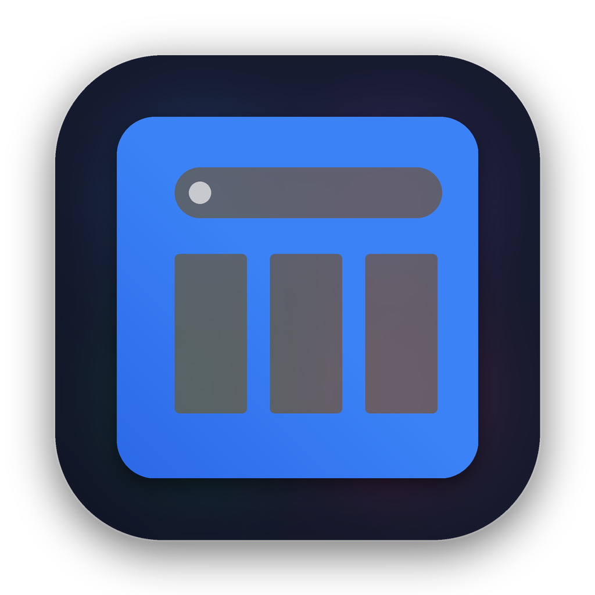
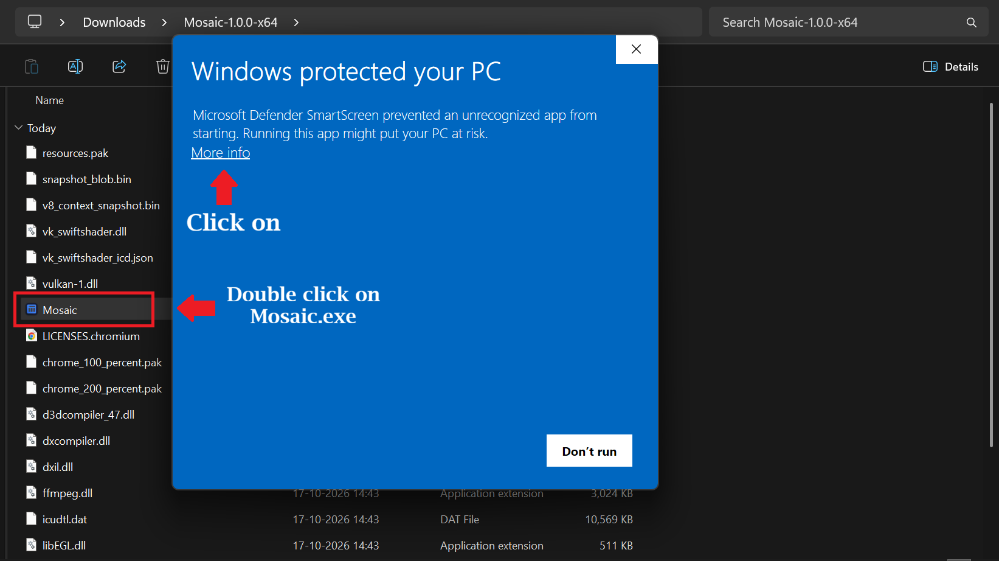
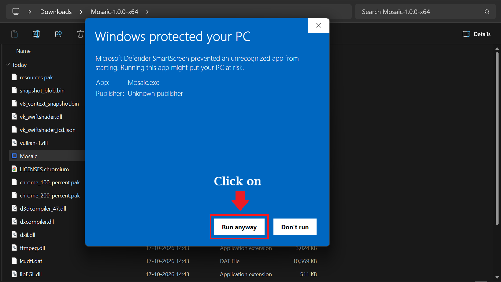

MosaicOne browser. Multiple websites. Infinite possibilities. Mosaic Browser helps individuals, students, developers, researchers, traders, digital marketers, customer support teams, CRM users, analysts, content creators and professionals stay productive by keeping multiple websites visible in a single organized workspace without the constant frustration of switching tabs and windows.
Most people spend their day switching between browser tabs, browser windows and applications. Mosaic Browser brings everything together into one organized workspace so you can focus on work instead of managing tabs.
View several websites simultaneously in the same window.
Arrange websites using multiple layout options designed for productivity and multitasking.
Create separate workspaces for different projects and tasks.
Compare sources, notes and references side by side.
Keep CRM tools, emails, dashboards and communication platforms visible.
Spend less time searching for tabs and more time getting work done.
Learn, research and take notes more efficiently.
Keep documentation, AI assistants and dashboards visible together.
Compare multiple websites simultaneously.
Monitor campaigns, analytics and social platforms in one place.
Watch charts, news, indicators and trading tools side by side.
Browse, compare products and manage daily online activities comfortably.
Mosaic Browser is designed to respect user privacy.
Mosaic Browser is an open-source project. Anyone can inspect the source code, review how the application works and verify its privacy and security practices.
Hi, I'm Sandeep, an independent software developer.
Mosaic Browser started as a personal project to solve a simple problem: most browsers are great at opening tabs but not great at organizing work.
My goal is to build useful software that improves productivity while respecting the user's privacy and control over their data.
If Mosaic Browser makes your workflow better and saves you time, consider supporting future development.
Download the latest version of Mosaic Browser.
Because Mosaic Browser is a new independent application and has not yet built up Microsoft's reputation database, Windows may display a security warning when you launch it for the first time. This is common for new software and does not mean the application is harmful.
After opening Mosaic Browser, Windows may show a screen similar to the image below. Click More info.

After clicking More info, Windows will reveal the Run anyway button.

Click Run anyway to start Mosaic Browser. Future Windows security prompts may become less frequent as the application builds reputation.
Mosaic Browser is currently distributed without Apple notarization. Because of this, macOS may prevent the application from opening after downloading it from the internet and may display messages such as "Mosaic is damaged and can't be opened".
Download the Mosaic DMG file and double-click it. A window will appear showing the Mosaic application icon and the Applications folder shortcut.
Drag the Mosaic icon into the Applications folder. Wait for the copy process to finish completely.
Open the Terminal application on your Mac.
You can find Terminal by:
Copy and run the following command exactly as shown:
xattr -dr com.apple.quarantine /Applications/Mosaic.appThis removes the quarantine flag that macOS applies to some applications downloaded from the internet.
Open the Applications folder and launch Mosaic.
The application should now start normally.